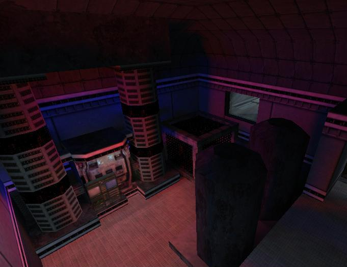

- FUNC_TECH_BREAKABLE
The breakable tech entity allows corporations to sabotage each other's operations through methods that may not directly from the scientists. With these entities they can destroy vital equipment. This can range from the small (breaking the coffee machine to make the scientists irate), to the critical (hacking the computer main frame, or blowing out the main reactor). The repurcussions of not protecting your equipment can spell early bankruptcy and shame for your corporation.
What follows is an description of all the flags and key names that can be set on a func_tech_breakable, so that mappers can look up what exactly everything does. Then there is a section on general pointers to using breakables well in your map. Finally there'll be a few descriptions of well executed tech_breakables in S&I maps.
Feel free to email si@planethalflife.com with any clarification questions or suggestions to improve this document.
Only Trigger [default off] - This breakable can only be broken by a trigger.
Touch [default off] - does touching this breakable do damage?
Pressure [default off] - does standing on this breakable do damage?
Don't respawn [default off] - The breakable will spawn once initially, and then never respawn.
Instant Crowbar [default off] - Bludgeoning weapons will distroy this in on hit.
Description [default "TechBreak"]
This is the tech breakable's name that is displayed to all the other players and handled by the companies.
Destroy Message [default "Some of your company's valuable research equipment has been destroyed, affecting the efficiency of your company's operations."]
Team [default MCL]
Choices: MCL (Blue), AFD (Green)
Setting up the tech breakables requires a company to call their owner. No un-aligned tech breakables are allowed.
Replacement Cost [default "Medium"]
Choices: No replacement cost, Cheap ($1,000), Medium ($5,000), Costly ($10,000), Expensive ($25,000), Critical ($100,000)
After a the entity is broken, it goes into a dormant replacing state. After that time is up and it's finally replaced, this amount is subtracted from the account of its owning company.
Replacement Time [default 120]
Choices: Very Quick (30 sec), Short (1 min), Medium (2 min), Long (5 min)
This is the amount of time it takes from a breakables destruction to its replacement. Long replace times are tough on the owning company, as that they lose some of their functionality without their equipment. Replacing equipment, although expensive, is a good thing.
Contributed Cash Production [default 0]
Choices: No cash production, $5/second, $10/second, $15/second, $30/second, $60/second
A tech breakable does not add more cash production to the standard S&I balanced norm. Rather, when it's missing, it's assumed that it was contributing a certain part of that. Therefore, when a tech breakable has been destroyed and is awaiting replacement, the owning company suffers. This value is the ammount of cash the company will produce less than normally.
Contributed Research [default 0]
Choices: No research, Fourth of a scientist, Half a scientist, One scientist, Two scientists
A tech breakable does not add more research production to the standard S&I balanced norm. Rather, when it's missing, it's assumed that it was contributing a certain part of that. Therefore, when a tech breakable has been destroyed and is awaiting replacement, the owning company suffers. This value is the ammount of research the company will produce less than normally. The units are given in scientists because it's easiest to think of it that way.
Research Stored [default 0]
Choices: No research stored, 10%, 25%, 50%, 75%, 100%
The information on all the research the scientists are doing has to be stored somewhere. This setting allows you to make this tech_breakable represent a proportion of this. When the entity is broken, the percent set here is lost from what the coroporation had already completed on their current research. No already finished research will be lost.
Importance [default "Medium"]
Choices: Insignificant, Minor, Medium, Major, Critical
When the player destroys a tech_breakable, his bonus points are determined by the entity's impotance. Also, many of the effects of breakables are scaled to their importance rating.
Technology Type [default "Generic"]
Choices: Generic, Computer, Cloning, Replicators, Implant Machinery, Communications, Coffee/Candy Machine
Further specifying the technology type of this breakable adds more specific consequences of its loss. These effects are heavily scaled to the items importance rating.
- Generic - no additional effects
- Computer - decrease in company's overall speed of cash generation
- Cloning - increased cloning delay and cost
- Replicators - increased delay in respawning weapons and ammo
- Implant Machinery - increased cloning delay
- Communications - decrease in scientist's cash generation and increase in scientist hiring and wake up time
- Coffee/Candy Machine - decrease in scientist efficiency and recovery from noise
Case Study: si_metropolis

One of the most elegantly implemented tech breakable yet in Science & Industry would certainly have to be the reactor in si_metropolis.
{kind=link}